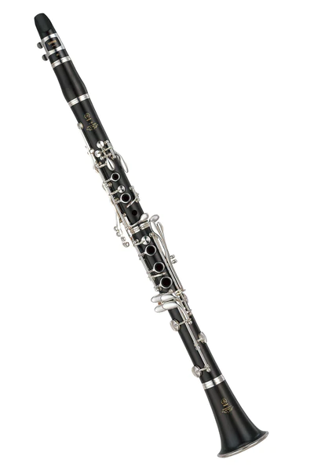
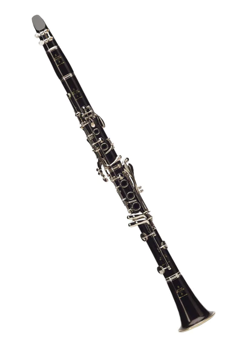
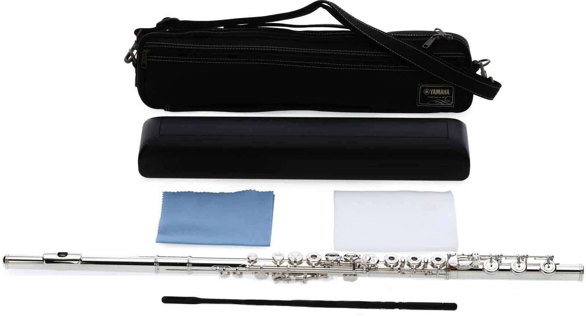
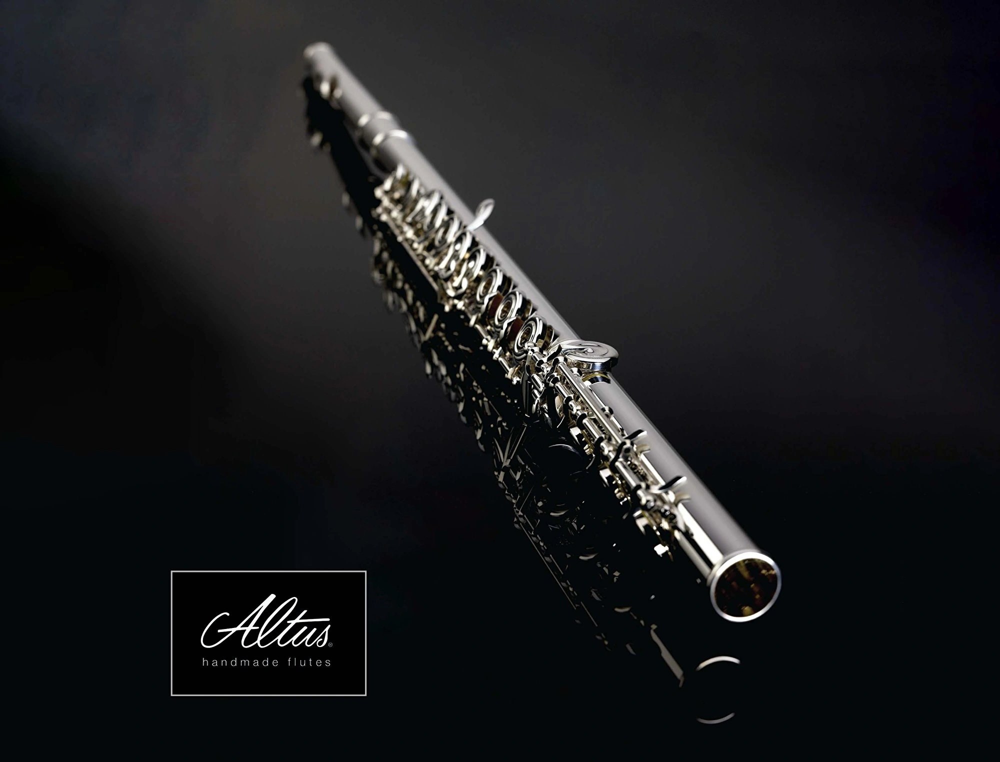

Klarnetler
Amati ACL 361S Eb Clarinet (1070$)

The Amati ACL 361S Eb Clarinet is a great quality grenadilla wood instrument. It also has a cocobolo wood bell. It enables players to produce responsive, colourful tones with excellent projection across the whole range of the instrument. A good option for a first Eb clarinet. The 61S comes with the added benefit of 2 barrels, for tuning adjustment, and an adjustable thumb rest.
-
Boehm system standard model
-
17 keys, 6 rings
-
Bore 13mm (.512")
-
Grenadilla wood body
-
Cocobolo wood bell
-
2 barrels
-
Adjustable thumb rest with ring for neck strap
-
Silver-plated keywork
-
CITES Appendix II Wood
Yamaha YCL 650 Bb Clarinet (1.280$)

The Yamaha YCL 650 Bb Clarinet is a professional standard instrument. Perfect for the professional clarinettist on a budget. Made from carefully selected and seasoned grenadilla wood. The 650 benefits from hand finishing to create a top quality instrument. Yamaha has introduced features from the custom series of instruments such as the tapered and hand finished undercut tone holes, resonance chamber in the bell and carefully designed silver plated sculpted key work. Each clarinet has its key work regulated by master Yamaha craftsmen for perfect balance, meaning you will not have to work as hard to play difficult passages of music. The straight cylindrical bore offers a free blowing, clean, warm sound that would be comparable to higher quality instruments. Along with an adjustable thumb rest, this instrument will adapt to work with you. The 650 comes in a hard case with case cover to keep the instrument safe when transporting; alsongside an accessory pack which includes a clarinet pull through to keep your instrument free of moisture after playing and cork grease. The silver plated ligature and mouthpiece cap along with the CL4C mouthpiece means you can start enjoying your new instrument right away.
This clarinet is a serious contender if you are looking for a professional quality instrument without the heafty price tag. This clarinet is constructed with quality, artistic excellence and reliability. Yamaha as a brand aim to bring durable, well built instruments to allow players to develop their own unique sound. This with hand finishing is why Yamaha have continued to produce high quality instruments for over 30 years.
Series Bb Clarinet:
-
Key: Bb
-
65 mm barrel
-
Grenadilla body
-
Silver-plated keys
-
Silver-plated ligature and mouthpiece cap.
-
CITES Appendix II Wood
Buffet Crampon R13 Professional Bb Clarinet (4.495$)

Efsanevi Profesyonellerin Seçimi olan R13, 1955 yılında Robert Carrée tarafından yapılmıştır ve dünyadaki en popüler profesyonel klarnettir. Güçlü ses tonu ile odaklanmış ve zenginlik sağlar.
-
Klarnet Buffet Crampon R13 17/6 grenadil
-
Esnekliği sayesinde senfonilerden oda müziğine, solistler, öğretmenler, bandolar, öğrenciler ve amatörler için tüm repertuvara uygundur
-
Gövdesi boyalı grenadil ağacı
-
17 perde ve 6 yüzüklü
-
Perdeler gümüş kaplama
-
Deri-güderiler
-
Ligatür, kapak, temizleme bezi ve orijinal kutusuyla birlikte
-
Fransa üretimi
Yan Flütler
Azumi AZ3SRBEO-C Professional Flute (3.669$)

Altus Z-cut professional headjoint is responsive and clear
Azumi flutes are distinguished by the inclusion of the Altus Z-cut professional headjoint. Responsive and free blowing, the Altus Z-cut headjoint features a rectangular-shaped embouchure hole, which improves articulation and allows your flute to sing sweetly in all registers. Carefully crafted by Altus, this handmade headjoint is included with every Azumi flute. The Altus Z-cut headjoint’s clear, open tone makes it a natural choice for symphonic settings, while its remarkable responsiveness will appeal to jazz players and flutists performing in other contemporary styles.
Altus-Bennett Scale provides exceptional intonation
Another commonality between all Azumi flutes is the use of the Altus-Bennett scale. A collaboration between Altus flutemaker Shuichi Tanaka and renowned British flutist William Bennett, the Altus-Bennett scale is a modified version of the Cooper scale, which was adopted by most major flute manufacturers to replace the Boehm system. The Altus-Bennett scale expands on the Cooper system to create flutes that exhibit exceptional intonation, carefully tuned harmonics, and balanced registers. Not only will you benefit from improved intonation, but you’ll also be treated to an effortless playing experience along with a tone boasting incredible depth, color, and clarity.
Azumi by Altus: traditional artistry meets modern innovation
Founded by musician, engineer, and master flute maker Shuichi Tanaka, Altus has provided the music world with brilliantly conceived and exquisitely constructed instruments that merge traditional artistry with modern innovation. Made by Altus, Azumi flutes are designed by Tanaka to provide serious student musicians and aspiring artists with professional-class features at an affordable price. Azumi flutes share many attributes with Altus’s handcrafted flutes, including the Altus Z-cut professional headjoint, the Altus-Bennett scale, and elegant pointed key arms, making them a step-up flute of choice for music educators.
Azumi AZ3SRBEO-C Concert Flute Features:
-
Carefully crafted step-up flute with a sterling silver body
-
Sterling silver Altus Z-Cut professional headjoint improves articulation and allows your flute to sing sweetly in all registers
-
Altus-Bennett scale provides exceptional intonation and an effortless playing experience
-
Fluid and responsive open-hole key mechanism with elegant pointed key arms
-
Gizmo key facilitates easy playing of the 4th-octave C
-
B footjoint extends the lower range of the instrument
-
Comfortable offset G key system with split E mechanism and C# trill key
Yamaha YFL-677H Flute (6.530$)

Inheriting the many merits of top-of-the-line Yamaha handmade flutes, these models offer rich, nuanced tonality over a wide dynamic range. The 500 and 600 series combine the brightness of nickel silver with the characteristic mellow timbres of sterling silver, while the 700 series delivers warmth and expressive colour that only the finest silver flutes can provide. All models come with Type Am headjoints based on the Type A headjoints supplied with handmade flutes 900 and 800 series. The keys feature traditional pointed key arms, reflecting the highest level of craftsmanship and adding visual elegance to these outstanding instruments.
Type Am Headjoint
Based on the Handmade Flute’s Type A design, which offers a wider expressive range, the Type Am headjoint additionally offers easier response and excellent balance over the instrument’s entire range, slightly heavier resistance, and a wide dynamic range.
Straubinger Phoenix™ Pads (YFL-700/600)
Straubinger Phoenix™ Pads offer the same concept as Straubinger™ Pads on our Handmade Flute, and have more suitable design for 700/600 series. The pads offer softer touch, but also superior response, wide dynamic range and tolerance of environmental changes same as Straubinger™ Pads.
Heavy Wall Thickness (YFL-700/600)
The thickness of the wall has been increased from 0.38mm to 0.43mm to improve balance for use with the new Type Am headjoint and the Straubinger Phoenix™ Pads.
Sound Annealing
A special annealing process delivers more pure transmission of vibration from the player to the flute for rich resonance and superior response.
Key Design
The keys are hand-assembled and meticulously balanced for a perfect touch. And the key shapes have been so exquisitely designed and ergonomically placed that the flute will almost ‘disappear’ in your hands. Performances will feel effortlessly natural.
Pointed Key Arms
A#, F# and other non-fingered keys feature pointed key arms. Found on Handmade Flute, their beautiful designs are inspired by traditional European styling.
Case
The case is compact for easy travel and durable to protect the flute, and is accompanied by a sophisticated case cover.
Altus El Yapımı Modeli - 1407 (12.300$)

Klasik Som Gümüş (Ag925) özelliğine sahip Altus 1407, üstün sesi ve zengin tonları rahatça olanak sağlayan tamamen saf el yapımı gümüş bir model olması sayesinde profesyonel flütçülerin ihtiyaçlarını rahatlıkla karşılar. Ayrıca, bu üst düzey el yapımı modeli ile daha yüksek kaliteli lehimli ton deliği teknikleri kullanarak daha koyu ve geniş ses kalitesine sahip olmayı başardık.
El Yapımı Seri:
-
Açık/Kapalı perde seçeneği
-
Ağızlık: 958 ayar Britannia gümüşü S-Cut / Z-Cut / V-Cut ağızlık
-
Paslanmaz çelik yaylar
-
Split-E Mekanizması: Mevcut
-
Açık perde G# offset: Mevcut
-
Kaplama seçenekler: 18 ayar altın veya Platin